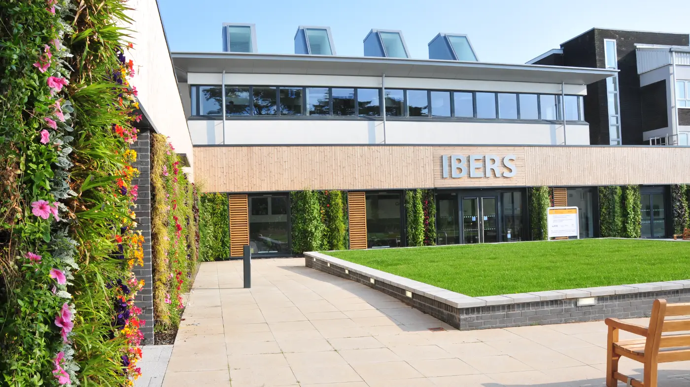

Interested in joining the lab?
If plant science and molecular genetics excite you, this could be the place for you.

No advertised posts right now
We currently have no open positions, but we're always happy to talk about other ways to join the lab, whether as an undergraduate, PhD student, postdoc or research assistant.
Get in touch and we can tell you more about possible projects.
Ways people have joined us
PhD
Our PhD students have been funded through competitive doctoral training schemes such as the FoodBioSystems DTP, often in partnership with plant breeding companies.
Year in Industry & Masters
Aberystwyth undergraduates regularly spend their Year in Industry with us, and some come back for a Masters project.
Undergraduate projects
Final-year and summer projects give undergraduates hands-on experience of genetics and cytology research, from fertility under heat stress to meiosis in polyploids.